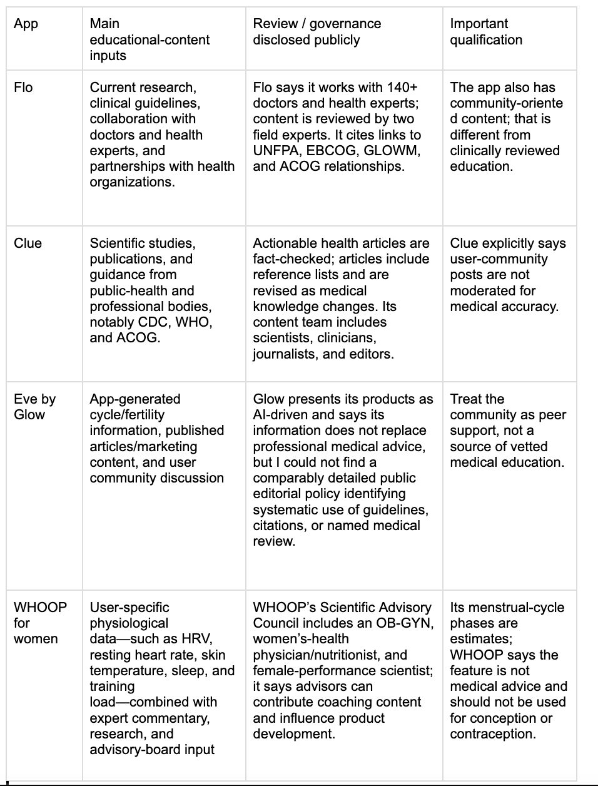
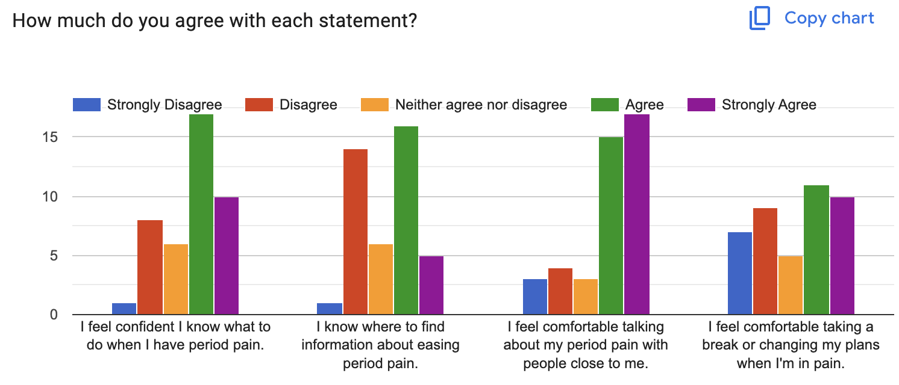
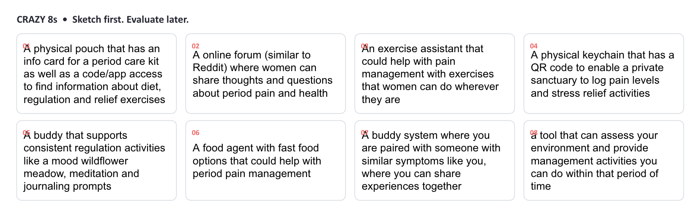

The Starting Point: Explore a trustworthy, approachable menstrual-health education tool that
encourages people to acknowledge pain instead of pushing through it.
What I Did: Audited four adjacent products, fielded a formative survey, and conducted four
collaborative interviews about pain, relief routines, trust, and emotional support.
The Design Shift: Moved from a broad content library toward situational remedies, trusted
support, and a physical-to-digital companion concept. These were proposed directions, not proven outcomes.
01. The Scene // “The concept proposal”
I began with a recurring problem: menstrual pain is often minimized, normalized, or simply endured. In my concept proposal, I referenced a PERIOD poll in which 73% of respondents said they had felt pressure to tough out period pain and 74% said they had heavily downplayed how much pain they felt. These figures came from an external poll, not my own study.
My first instinct was to design a menstrual-health education application: one place to understand symptoms, find reliable information, and discover pain-management activities. But the more I looked at existing tools, the more I wondered whether another large library would make it easier to act—or just give someone in pain one more thing to sift through.
“How can a period management tool help people manage their pain without suppressing or ignoring it?” — The central question I took from my concept proposal, paraphrased
02. The Starting Hypothesis // “More information, better support?”
Before recruiting participants, I compared the educational content and publicly described sourcing practices of four products. This wasn't a usability test; it was a landscape review to understand what information already existed and where my idea might fit.
Flo
A large reproductive-health content library with reported clinician involvement and medical review. My takeaway: volume and clinical sourcing were already well represented in the market.
Clue
Science-oriented articles with references, fact-checking, and a more explicit editorial approach. My takeaway: source transparency matters when people are uncertain about symptoms.
Eve by Glow
Cycle information and a peer community alongside published content, with less publicly detailed editorial governance in the materials I reviewed. Peer support is not the same as medical review.
WHOOP for Women
Personalized physiological insights and expert commentary, rather than a conventional period-education library. Its cycle estimates are not positioned as medical guidance.

The comparison helped sharpen three research objectives from my concept proposal:
- Understand how people already manage period pain and which techniques work for them.
- Explore whether the concept’s tone makes someone feel comfortable and confident, rather than dismissed or worried.
- Learn whether suggested activities and information fit what people actually do when pain begins.
03. What I Actually Did // “From the survey to the stories behind it”
I used a survey to get a first look at information-seeking, pain-minimization habits, and delays in acting on pain. I distributed it through UMSI chatrooms, women-led student groups, and personal networks. I then invited survey participants who expressed interest in follow-up research to take part in collaborative interviews.
01 · Formative Survey
Investigated where respondents look for menstrual-health information, when they seek it, whether they downplay or delay responding to pain, and what kinds of relief they want to learn about.
02 · Four Collaborative Interviews
Explored personal pain stories, existing period kits and coping routines, preferred relief methods, decisions about professional care, and what participants wished others understood about their pain.
03 · Research Synthesis
Brought together survey observations and recurring interview themes around context, existing resources, preparedness, and the emotional dimensions of pain management.
04 · Crazy 8s Ideation
Used the research implications as a jumping-off point for several interventions, rather than staying attached to the original education-library idea.


04. What the Research Revealed // “Knowing what to do isn't the same as being able to do it”
Finding 1 · Information was already accessible
Survey respondents commonly turned to search engines and social media rather than AI chatbots. Many already had go-to sources, although trust in menstrual-pain information was generally neutral.
Finding 2 · The situation changes the options
Interview participants described how class, work, and other responsibilities could make rest or familiar relief strategies difficult to use—even when they knew what usually helped.
Finding 3 · Coping is personal, not perfectly effective
Participants sometimes continued using familiar techniques despite mixed results. Their choices depended on past experience, available resources, and the symptoms they felt that day.
Finding 4 · Feeling supported matters
Acknowledgment, patience, practical help, and the ability to communicate needs were important even when someone else's support could not directly reduce physical pain.
Respondents also wanted practical information about managing pain at school or work and about food-related relief options. Some searched to understand whether their pain was normal. Together, these observations suggested the opportunity was not simply to provide more articles, but to help users respond in context.
05. The Messy Middle // “I had to let the first idea go”
The original proposal assumed that access to trustworthy education was the main problem to solve. My interviews complicated that assumption. People weren't always missing information: often they were missing time, flexibility, comfort, or permission to act on it. Someone might know rest helps, but still be sitting in class. Someone might have a trusted routine, but not the resources to use it while commuting.
Before · A resource library
Help users browse menstrual-health information and discover general pain-relief methods. Success would largely depend on finding and reading the right content.
After · Support in the moment
Start with the user’s current situation, preferences, and available resources, then offer manageable options and access to trusted emotional support.
06. The Design Principles // “What I carried into ideation”
I translated the findings into a set of constraints for the solution—not just a list of features I wanted to build.
Situation before technique
Organize suggestions around where someone is—home, class, work, or a commute—before showing remedies.
“My” toolkit, not a universal fix
Respect strategies people already use. Offer optional feedback such as “Did that help?” without heavy tracking.
Make space for support
Help users ask for patience, encouragement, or practical help. Acknowledge pain without promising it will disappear.
Keep the cognitive load low
Favor small, accessible actions and self-compassion. Keep period supplies distinct from pain relief itself.
07. The Design Proposal // “A companion, not another tracker”
The proposal moved toward a personalized support experience with three early feature concepts. These represent the design proposal stage, before later MVP scope decisions and prototype validation.
01 · Personalized remedies
Help users access approaches they already prefer, matched to current symptoms, context, and resources. For example, relief during class might look different from relief at home; a lightweight feedback loop could improve future suggestions.
02 · A private support community
Let trusted friends or close contacts send encouragement and small gestures of care. The concept was intentionally private and supportive, rather than another public advice forum.
03 · A digital period-kit list
Explore a way to remember menstrual essentials and optionally replenish supplies. This was an early design-proposal feature, not a need established by interviews, and was removed from the later MVP.
04 · A plush NFC keychain
Explore a soft, portable object that could open a companion web experience through a phone tap. At this stage, the physical element was a hypothesis about comfort and accessibility that still needed testing.
The physical concept is a small plush keychain that can travel on a bag or backpack. Embedded NFC technology would connect it to the web application, combining the familiarity of a tangible companion with immediate access to digital support. I wanted to test whether that interaction genuinely reduced friction at painful moments.

08. Did It Work? // “What the evidence supports so far”
The outcome at this stage is a research-grounded design direction, not a demonstrated improvement in pain or a validated product. The survey and four interviews surfaced useful needs and constraints, but they do not establish how broadly those patterns generalize. The proposed interface, particularly the NFC plush interaction and trusted support features, still needs to be tested with potential users.
My next steps are to prototype the critical flows, test whether users can access the right kind of support when they need it, and learn whether the physical companion actually adds comfort and convenience. I also want to evaluate users’ boundaries around involving trusted people and confirm that the experience feels gentle, accessible, and low effort rather than becoming another task to manage.
09. Behind the Scenes // “Letting the research change the idea”
10. Souvenirs // “The research trail”
The written milestones behind this story are available below. The design proposal documents the feature ideas at that point in time; the later MVP refinement is described separately above.
The biggest shift in this project wasn't a new feature; it was learning to separate access to information from the ability to use it. My first concept focused on making knowledge easier to find. The interviews reminded me that pain happens within schedules, social expectations, and practical limits. That changed what I was designing for. It also taught me to distinguish between something participants said they needed and something I, as a designer, wanted to explore. The plush keychain is a good example: I can believe in its potential while still treating its usefulness as a hypothesis that must earn its place through testing.